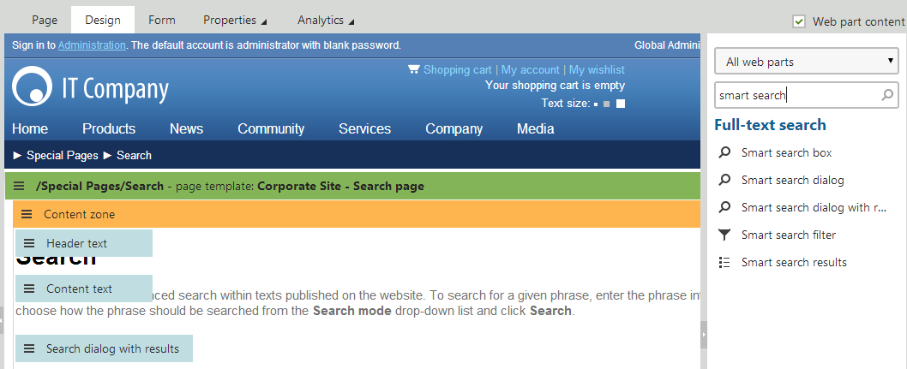
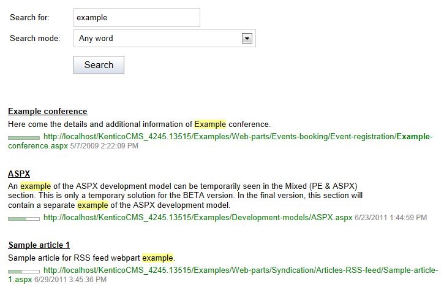
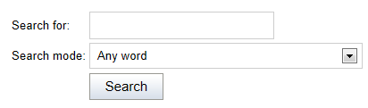
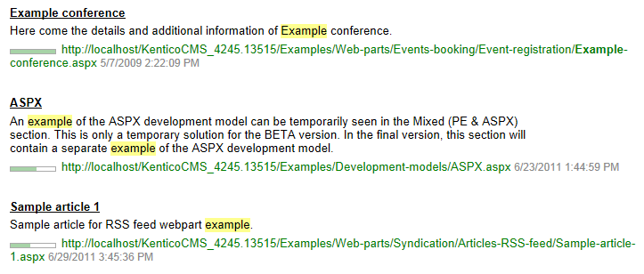
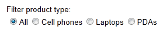

Building a search interface for local indexes
Kentico provides a set of smart search web parts that you can use to build a search interface on the pages of your website.
Important: The default search web parts only work with locally stored indexes. When using Azure Search indexes, you need to build the search components yourself according to your website's requirements. See Integrating Azure Search into pages for more information.
You can find the smart search web parts in the Full-text search -> Smart search category.

Smart search web parts
Note: This page only describes the most important properties of search web parts. For a complete list and explanations of the web part properties, configure one of the web parts in the Pages application and click the help icon in the top right corner of the configuration dialog.
Smart search dialog with results
The Smart search dialog with results is an all-in-one web part that:
Allows users to search
Displays the results

Smart search dialog with results web part
The following properties are the most important for setting up the smart search:
|
Property name |
Description |
|
Indexes |
Determines which indexes the search uses. You can select multiple search indexes. Note: The web part only allows you to select locally stored search indexes. |
|
Transformation name |
Name of the transformation that displays the search results. There are two default transformations suitable for this purpose:
|
|
Search options |
Sets the level of syntax that is allowed in search expressions:
See: Smart search syntax |
|
Search condition |
Sets a condition that is added to any submitted search expressions. The condition is built using the smart search syntax, i.e. special symbols (+ -) and field conditions. For example: +articleid:[(int)25 TO (int)150] Note: To be usable in search conditions, fields must have the Searchable option enabled in the Local search field configuration of individual object types. |
|
Search sort |
Defines the order in which search results are displayed. You can specify one or more search fields (separated by commas) according to which the results will be sorted. Use the ##SCORE## macro to order results by their score (relevance). The default order is ascending — you can reverse the order by adding the DESC keyword (e.g. articleid DESC). If you encounter the "Field <fieldname> does not appear to be indexed" error when using multiple indexes, try specifying the type of the field, for example: (date)documentcreatedwhen Note: To be usable in search sort expressions, fields must have the Searchable option enabled in the Local search field configuration of individual object types. Additionally, we recommend having the Tokenized option disabled for the fields (dividing the field's value into searchable tokens may interfere with the sorting). |
Smart search dialog
The Smart search dialog allows visitors to submit search requests and select the Search mode.
You need to place the dialog on a page together with the Smart search results web part. The combined functionality of the two web parts is nearly identical to the Smart search dialog with results. Using separate web parts allows you to place the dialog and results into different locations on the page.

Smart search dialog web part
If you enable the dialog's Show only search button property, the web part only displays the submit button without the search textbox and mode selector. This functionality is intended for scenarios that utilize Smart search filters to specify all of the search parameters. You can add the textbox separately from the search button by connecting a Smart search filter web part in textbox mode.
Smart search box
The Smart search box allows visitors to submit search requests. The search box is useful for pages that have limited space and are not primarily dedicated to searching. For example, you can add a search box to your website's main header. The web part handles search requests by redirecting users to a different page, where the Smart search results or Smart search dialog with results web part displays the results.
You can configure the Smart search box to display results instantly while users type the search text. See Setting up predictive search using local indexes for more information.
Smart search box web part
Smart search results
The Smart search results web part displays the results of search requests sent from Smart search box or Smart search dialog web parts.
To connect the search box or dialog to the search results:
Search dialog – place the dialog on the same page as the search results, copy the Web part control ID of the search results web part into the dialog's Result webpart ID property.
Search box – enter the relative URL of the page containing the search results into the search box web part's Search results page URL property.
You can configure the Smart search results using the properties described for the Smart search dialog with results.

Smart search results web part
Smart search filter
The Smart search filter web part allows users to set parameters that affect the scope of the search or the order of the displayed results. You can also use the search filter to add a separate search textbox to pages.
See Adding filters for local search indexes for more information.

Smart search filter web part in radiobutton mode